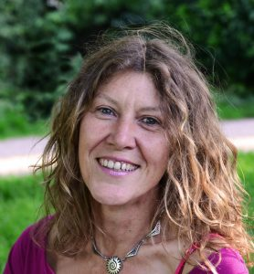
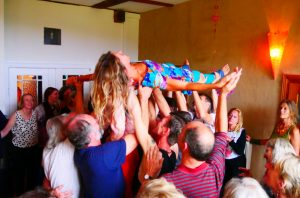

Willkommen bei Biodanza
Über mich

Brigitte Münch
Zertifizierte Biodanza-Lehrerin (IBFed), ausgebildet an der BIODANZA-Schule Freiburg bei der wundervollen
Hildegard Penaloza.
Ich habe 2023 eine Ausbildung, mit Zertifikat als BewusstSeins Coach (Conscious Evolution Coaching) in Freiburg abgeschlossen.
Meine Leidenschaft ist Bewegung (BIODANZA, Laufen, Wandern, Schwimmen, Radfahren), Naturliebhaberin. Bin Mutter von zwei schon lange erwachsenen Kindern und Großmutter eines zauberhaften Engelkindes.
Wohnhaft in Bremen.
Ich leite seit 2012 begeistert Biodanza-Gruppen und seit 2016 hier im Bremer Viertel.
„Ich tanze und ich BIN“
Biodanza-Fortbildung:
Biodanza und Neoschamanismus, Augusto Madalena, Spanien 2019
Feiere deinen Geburtstag mit Freunden, Familie und Biodanza.
Ich biete Biodanza auch zu besonderen Festen an.

„Tanz Biodanza, damit Dein Leben glücklicher ist.
Tanz Biodanza, um dich besser mit anderen verbinden zu können,
um Zuneigung zu erhalten, Freude zu teilen, zu feiern…“
Rolando Toro Araneda (Begründer von Biodanza)